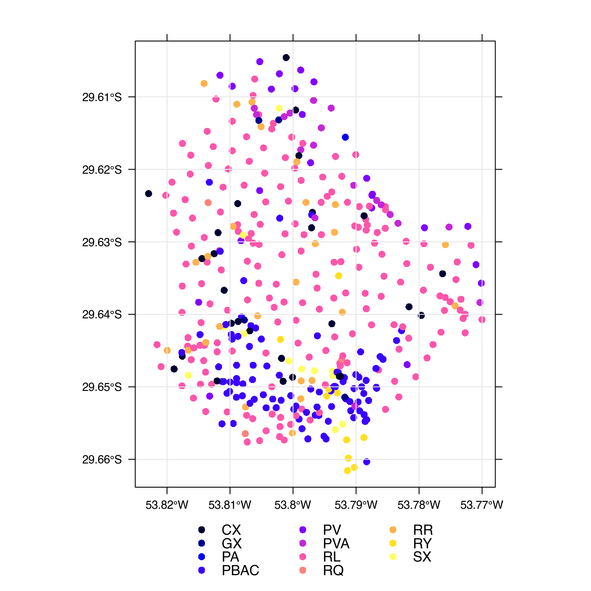
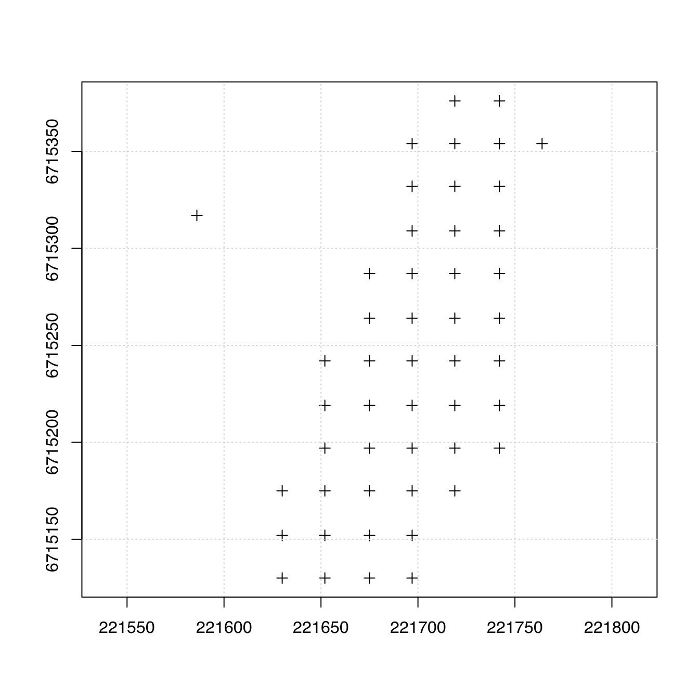
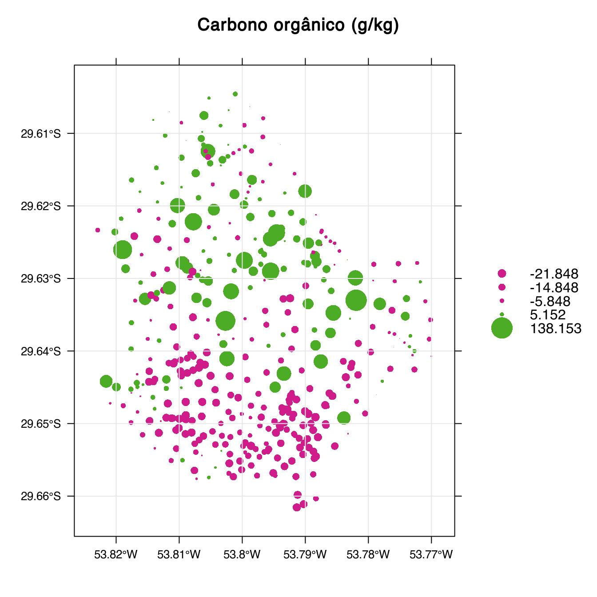

O Repositório Brasileiro Livre para Dados Abertos do Solo – febr, http://www.ufsm.br/febr/ – foi criado com o propósito de servir de plataforma para a compilação, organização e publicação de todos os tipos de dados do solo produzidos no Brasil. Para isso são usados padrões baseados em experiências internacionais, principalmente uma política de dados abertos, primando pela facilidade de acesso, manutenção e uso. A meta é constituir um repositório centralizado para armazenar e servir dados do solo em formato padronizado e harmonizado para várias aplicações. Estas incluem o desenvolvimento de bases de dados especializadas, a melhoria do Sistema Brasileiro de Classificação do Solo, a criação do Sistema Universal de Classificação do Solo, a construção de sistemas inteligentes de recomendação de fertilizantes, o desenvolvimento de experimentos agronômicos de larga escala espacial e temporal, e o suporte ao recém-lançado programa nacional de levantamento de solos (PronaSolos).
O uso de uma instalação centralizada de armazenamento e compartilhamento de dados do solo febr reduz os esforços duplicados de recuperação de dados do solo. Isso permite que os já escassos recursos existentes sejam usados de maneira mais racional para maximizar a colaboração entre cientistas do solo. No longo prazo, isso deve alavancar o avanço do conhecimento sobre o solo. Para facilitar ainda mais a reutilização dos dados publicados no febr, os cientistas do solo têm à sua disposição o pacote febr para o R.
A versão atual de desenvolvimento do pacote febr está disponível no endereço https://github.com/febr-team/febr-package. Sua instalação pode ser feita – usando o pacote devtools – da seguinte maneira:
if (!require(devtools)) {
install.packages(pkgs = "devtools")
}
devtools::install_github(repo = "febr-team/febr-package")Depois de instalado, o pacote febr pode ser carregado para a sessão de trabalho no R usando o seguinte comando:
library("febr")## ---------------------------------------------------------------------
## Free Brazilian Repository for Open Soil Data
## febr version 0.8-0
## (built on 2018-02-25) is now loaded
##
## Making the access to the Free Brazilian Repository for Open Soil Data
## as easy as possible. Access http://www.ufsm.br/febr/.
## Contact febr-forum@googlegroups.com for more information
## and to learn how you can help!
## ---------------------------------------------------------------------##
## Attaching package: 'febr'## The following object is masked from 'package:latticeExtra':
##
## layerO pacote febr possui três grupos de funções – veja tabela abaixo. As funções estruturais são usadas para descarregar informações sobre as tabelas de dados e os padrões usados no febr. As funções de acesso são usadas para descarregar dados dos conjuntos de dados publicados no febr. Já as funções auxiliares servem de apoio ao processamento e uso dos dados.
Nas próximas seções são demonstradas aplicações dessas funções usando conjuntos de dados reais publicados no febr.
| Função | Grupo | Descrição |
|---|---|---|
header |
Estrutural | Descarregar o cabeçalho das tabelas de dados |
standard |
Estrutural | Descarregar os padrões de codificação e nomenclatura do febr |
unit |
Estrutural | Descarregar os padrões de unidades de medida do febr |
dataset |
De trabalho | Descarregar informações gerais sobre um conjunto de dados |
observation |
De trabalho | Descarregar dados das observações do solo de um conjunto de dados |
layer |
De trabalho | Descarregar dados das camadas das observações do solo de um conjunto de dados |
metadata |
De trabalho | Descarregar metadados de um conjunto de dados |
febr |
De trabalho | Descarregar todos os dados e metadados de um conjunto de dados |
| febr2sp | Auxiliar | Criar objeto de classe SpatialPointsDataFrame. |
| febr2xlsx | Auxiliar | Escrever dados para arquivo XLSX. |
As funções estruturais servem para conhecer a estrutura das tabelas dos conjuntos de dados publicados no febr. Elas também servem para conhecer os padrões de codificação, nomenclatura, unidades de medida e número de casas decimais usados no febr.
A função header serve para descarregar o cabeçalho – as duas primeiras linhas – de uma das duas tabelas de dados – observacao ou camada – de um conjunto de dados publicado no febr. Isso permite verificar quais são as variáveis incluídas num determinado conjunto de dados, os códigos de identificação utilizados, e as respectivas unidades de medida. Por exemplo, o cabeçalho da tabela camada do conjunto de dados ctb0003 é o seguinte:
cab <-
febr::header(
dataset = "ctb0003",
table = "camada",
variable = "all",
progress = FALSE, verbose = FALSE) %>%
t()
cab ## [,1]
## dataset_id "ctb0003"
## observacao_id "-"
## camada_numero "-"
## camada_nome "-"
## amostra_codigo "-"
## profund_sup "cm"
## profund_inf "cm"
## areia_naoh_esferas_peneira "g/kg"
## argila_naoh_esferas_pipeta "g/kg"
## calcio_kcl_eaa "cmolc/kg"
## magnesio_kcl_eaa "cmolc/kg"
## acidez_kcl_naoh "cmolc/kg"
## potassio_mehlich1_eeac "cmolc/kg"
## sodio_mehlich1_eeac "cmolc/kg"
## carbono_dicromato_30min150_mohr "g/kg"
## densidade_solo_anel "Mg/m^3"
## cascalho_olho "%"No código acima, o argumento variable = "all" faz com que o cabeçalho descarregado inclua todas as variáveis contidas na tabela camada do conjunto de dados ctb0003. Do contrário, se o argumento variable for deixado em branco, apenas um subconjunto de variáveis de identificação é descarregado, especificamente as sete primeiras variáveis: dataset_id, observacao_id, camada_numero, camada_nome, amostra_codigo, profund_sup e profund_inf.
Também é possível descarregar o cabeçalho de uma tabela de dados de dois ou mais conjuntos de dados. Para isso basta informar o código dos conjuntos de dados usando o argumento dataset. Nesse caso, o argumento stack pode ser usado para solicitar que os cabeçalhos dos conjuntos de dados sejam empilhados, o que resulta como saída um único objeto de classe data.frame. Do contrário, a função retorna um objeto de classe list, no qual cada cada cabeçalho consiste em um item individual. Por exemplo, o empilhamento do cabeçalho da tabela camada dos conjuntos de dados ctb0003 e ctb0036 é feito da seguinte maneira:
febr::header(
dataset = c("ctb0003", "ctb0036"),
table = "camada",
variable = c("argila", "densidade", "carbono", "ph"),
stack = TRUE, progress = FALSE, verbose = FALSE) %>%
t()## [,1] [,2]
## dataset_id "ctb0003" "ctb0036"
## observacao_id "-" "-"
## camada_numero "-" "-"
## camada_nome "-" "-"
## amostra_codigo "-" "-"
## profund_sup "cm" "cm"
## profund_inf "cm" "cm"
## argila_naoh_esferas_pipeta "g/kg" "g/kg"
## densidade_solo_anel "Mg/m^3" "Mg/m^3"
## carbono_dicromato_30min150_mohr "g/kg" "g/kg"
## ph_h2o_25 NA "-"O código acima mostra que a função header também permite selecionar as variáveis de interesse usando o argumento variable. Nesse caso, vemos que ambos os conjuntos de dados possuem as variáveis argila, densidade e carbono, mas que apenas o conjunto de dados ctb0036 inclui a variável ph – o valor NA foi retornado para ctb0003. Essas informações serão importantes mais tarde quando os dados desses dois conjuntos de dados forem descarregados usando a função layer. De antemão, sabemos que os dois conjuntos de dados compartilham apenas algumas variáveis – argila, densidade e carbono estão entre elas.
A função standard fornece uma interface para descarregar informações sobre os padrões usados para as variáveis incluídas nas tabelas observacao e camada dos conjuntos de dados publicados no febr. Isso inclui a codificação e nomenclatura, a descrição de cada variável, a unidade de medida e o número de casas decimais, o tipo de dado, e a categoria da variável. Para as quatro variáveis usadas acima, a codificação, nomenclatura e descrição são as seguintes:
febr::standard(
variable = c("argila", "densidade", "carbono", "ph")) %>%
dplyr::select(campo_id, campo_nome, campo_descricao) %>%
pander(row.names = FALSE)| campo_id | campo_nome | campo_descricao |
|---|---|---|
| argila_xxx_xxx_xxx | Argila total | NA |
| argila_naoh_esferas_pipeta | Argila total | Argila total (< 0,002 mm). Dispersão química com hidróxido de sódio [naoh] na concentração de 1 mol/L. Dispersão mecânica por agitação horizontal por quatro horas com esferas de nylon [esferas]. Quantificação pelo método da pipeta. |
| argila_h20 | Argila dispersa em água | NA |
| densidade_particula_xxx | Densidade de partícula | NA |
| densidade_solo_xxx | Densidade do solo | NA |
| densidade_solo_anel | Densidade do solo | Desidade do solo. Amostragem usando anel metálico. Quantificação com balança de precisão. |
| densidade_aliquota | Densidade da alíquota de solo | Densidade da alíquota de solo. Densidade do volume de material usado para uma determinada análise laboratorial. |
| carbono_dicromato_30min150_mohr | Carbono orgânico | Carbono orgânico. Oxidação via digestão úmida usando solução sulfocrômica [K2Cr2O7 + H2SO4] 0,067 mol/L em um bloco de digestão a 150 ºC durante 30 min. A solução foi titulada usando sulfato ferroso amoniacal [Fe(NH4)2(SO4)2.6H2O] 0,1 mol/L. Esse método é conhecido como Mebius no bloco, proposto por Yeomans & Bremner (1988). |
| carbono_fornalha_1min950_cgdct | Carbono total | Carbono total. Oxidação via combustão seca em fornalha à temperatura de 950°C, na presença de oxigênio e óxido de cromo, por 1 min, e determinação por cromatografia gasosa (CG) usando um detector por condutividade térmica (DCT). Esse método é comumente conhecido como o ‘método do autoanalisador’. |
| carbono_fornalha_xxx_xxx | Carbono total | Carbono total. Oxidação via combustão seca em fornalha. |
| carbono_walkleyblack | Carbono orgânico | Conteúdo de carbono orgânico determinado usando o método de combustão úmida de Walkley-Black |
| carbono_xxx_xxx_xxx | Carbono orgânico | NA |
| carbono_sobre_nitrogenio | Razão carbono / nitrogênio | NA |
| ph_cacl2 | pH em CaCl2 | NA |
| ph_h2o | pH em água | NA |
| ph_h2o_25 | pH em água | Potencial hidrogeniônico. Determinação em água utilizando relação solo-água de 1:2,5 [25]. |
| ph_kcl | pH em KCl | NA |
O resultado da função standard mostra que existem inúmeras variáveis cuja codificação inicia com os termos argila, densidade, carbono e ph. Na maioria dos casos, a nomenclatura é a mesma. Contudo, a descrição de cada variável mostra que foram obtidas utilizando métodos laboratoriais mais ou menos distintos. Se for do nosso interesse retornar apenas as informações de variáveis específicas, então basta passar para o argumento variable seu código de identificação completo, por exemplo, ph_h2o_25.
Cabe destacar que, para algumas variáveis, a codificação e/ou a nomenclatura e/ou a descrição está(ão) incompleta(s). Na maioria dos casos, isso ocorre porque as variáveis aguardam pela revisão de consultores externos. Mas para algumas variáveis, a incompletude ocorre devido ao uso de codificação temporária, que será alterada num futuro próximo. As pessoas interessadas em auxiliar devem acessar a planilha https://goo.gl/hi77sB ou enviar mensagem de e-mail para o endereço febr-forum@googlegroups.com.
Acima, a função header serviu para conhecermos as variáveis contidas nos conjuntos de dados ctb0003 e ctb0036, e suas respectivas unidades de medida. Todas as variáveis compartilhadas pelos dois conjuntos de dados possuem as mesmas unidades de medida: g/kg para argila e carbono, e Mg/m^3 para densidade. Abaixo, vemos que a unidade de medida padrão para a argila e carbono é g/kg, e que ph não possui unidade de medida. Contudo, no caso da densidade, a unidade de medida padrão é kg/dm^3 – ao invés de Mg/m^3.
febr::standard(
variable = c(
"argila_naoh_esferas_pipeta", "densidade_solo_anel", "carbono_dicromato_30min150_mohr", "ph_h2o_25")) %>%
dplyr::select(campo_id, campo_unidade, campo_precisao) %>%
pander()| campo_id | campo_unidade | campo_precisao |
|---|---|---|
| argila_naoh_esferas_pipeta | g/kg | 0 |
| densidade_solo_anel | kg/dm^3 | 2 |
| carbono_dicromato_30min150_mohr | g/kg | 2 |
| ph_h2o_25 | NA | 1 |
A função unit serve de interface para uma tabela contendo diversas unidades de medida e as constantes utilizadas para a conversão dos dados entre elas. No caso da variável densidade, a constante de transformação é igual a 1. Isso significa que os valores expressos em Mg/m^3 são equivalentes aos expressos em kg/dm^3. Essa informação será útil mais tarde quando formos descarregar os dados desses dois conjuntos de dados usando a função layer.
febr::unit(source = "Mg/m^3", target = "kg/dm^3")## unidade_origem unidade_destino unidade_constante unidade_descricao
## 1 Mg/m^3 kg/dm^3 1 Densidade;A seguir são mostradas todas as unidades de medida e constantes de transformação disponíveis no febr. Adições podem ser feitas na forma de proposições diretamente na planilha https://goo.gl/Vvvsf2 ou via mensagem de e-mail para o endereço febr-forum@googlegroups.com.
As funções de acesso servem para efetivamente descarregar os dados dos conjuntos de dados publicados no febr.
Os dados sobre um conjunto de dados publicado no febr, contidos na tabela dataset, podem ser descarregados usando uma função de mesmo nome. Por exemplo, o conteúdo da tabela dataset do conjunto de dados ctb0003 é o seguinte:
febr::dataset(
dataset = "ctb0003", progress = FALSE, verbose = FALSE) %>%
na.omit() %>%
pandoc.table(
row.names = FALSE, caption = "Dados sobre o conjunto de dados `ctb0003` contidos na tabela `dataset`.")| campo | valor |
|---|---|
| dataset_id | ctb0003 |
| dataset_titulo | Conjunto de dados do solo da bacia do reservatório do DNOS-CORSAN, Santa Maria, RS |
| dataset_descricao | Compreende dados do solo de n = 400 observações feitas entre 2009 e 2013 na bacia do reservatório do Departamento Nacional de Obras de Saneamento-Companhia Riograndense de Saneamento (DNOS-CORSAN), localizada no estado brasileiro do Rio Grande do Sul. Esses dados do solo foram produzidos no âmbito de projetos de pesquisa que visam a produção de mapas semi-detalhados do solo e do uso da terra, e prever o estoque superficial de carbono no solo e sua vulnerabilidade à erosão. Todos os locais de observação foram selecionados intencionalmente ou por conveniência. Várias características ambientais foram descritas nos locais de observação, tais como o uso da terra, geologia, classificação do solo, declividade, condições de drenagem, presença de fragmentos grosseiros e afloramentos rochosos, cobertura do solo com vegetação, entre outras peculiaridades de cada local de observação que não foram registradas de uma forma sistemática. As amostras do solo foram submetidos à análise de laboratório para determinar o conteúdo de carbono orgânico no solo, a distribuição do tamanho de partículas, a densidade e o conteúdo de bases (cálcio, magnésio, potássio e sódio) e acidez trocáveis. A capacidade de troca de cátions efetiva foi calculada como a soma das bases e acidez trocáveis. Eles incluem a identificação de todos os locais de observação, as suas coordenadas geográficas, e dados de campo e de laboratório. O número de repetições de laboratório e o desvio padrão amostral também são fornecidos. |
| dataset_versao | 2.1 |
| dataset_licenca | CC BY 4.0 |
| publicacao_data | 17-01-2018 |
| organizacao_nome | Universidade Federal de Santa Maria (UFSM) |
| organizacao_url | http://site.ufsm.br/ |
| organizacao_pais_id | Brasil |
| organizacao_municipio_id | Santa Maria |
| organizacao_codigo_postal | 97105-900 |
| organizacao_rua_nome | Av. Roraima |
| organizacao_rua_numero | 1000 |
| autor_nome | Alessandro Samuel-Rosa; Pablo Miguel; Jean Michel Moura-Bueno; Andrisa Balbinot; Ricardo Simão Diniz Dalmolin; Lúcia Helena Cunha dos Anjos |
| autor_email | alessandrosamuelrosa@gmail.com |
| dataset_referencia_1 | http://dx.doi.org/10.1590/S0100-06832013000200013 |
| dataset_referencia_2 | http://w3.ufsm.br/ppgcs/images/Dissertacoes/ALESSANDRO-SAMUEL-ROSA.pdf |
| dataset_referencia_3 | http://dx.doi.org/10.1016/j.geoderma.2014.12.017 |
| dataset_referencia_4 | http://www.ia.ufrrj.br/cpacs/arquivos/teses_dissert/422_(DO-2016)_Alessandro_Samuel_Rosa.pdf |
| area_conhecimento | Gênese, Morfologia e Classificação dos Solos |
| palavras_chave | Mapeamento digital do solo; Pedometria; Amostragem intencional; Descrição do solo no campo |
| categoria_vcge | Pesquisa científica e tecnologia |
Uma das informações mais importantes contida na tabela dataset é a licença de uso do conjunto de dados (dataset_licenca). No caso de ctb0003, a licença de uso é [CC BY 4.0][cby], o que significa que o conjunto de dados pode ser distribuído, remixado, adaptado e usado para criar outros produtos, mesmo que para fins comerciais, desde que seja atribuído o devido crédito aos autores (autor_nome) do conjunto de dados original. A tabela dataset inclui ainda links para as publicações (dataset_referencia_i) onde o conjunto de dados foi inicialmente utilizado. Isso permite obter mais informações sobre o conjunto de dados caso aquelas contidas na tabela dataset se mostrem insuficientes e, também, para dar os devidos créditos aos seus autores.
Os dados sobre os dados contidos em um conjunto de dados, armazenados na tabela metadado, podem ser descarregados usando a função metadata. Por exemplo, o conteúdo (parcial) da tabela metadado do conjunto de dados ctb0003 é o seguinte:
set.seed(2001)
febr::metadata(
dataset = "ctb0003", progress = FALSE, verbose = FALSE) %>%
dplyr::select(dataset_id, tabela_id, campo_id, campo_nome, campo_descricao) %>%
group_by(tabela_id) %>%
sample_n(5) %>%
pandoc.table(
row.names = FALSE, caption = "Alguns dos dados sobre os dados contidos no conjunto de dados `ctb0003`.")| dataset_id | tabela_id | campo_id | campo_nome | campo_descricao |
|---|---|---|---|---|
| ctb0003 | camada | sodio_mehlich1_eeac | Sódio trocável | Sódio trocável. Extração com solução de ácido clorídrico (HCl) na concentração de 0,05 mol/L e ácido sulfúrico (H2SO4) na concentração de 0,025 mol/L (Mehlich-I) [mehlich1]. Quantificação por espectrometria de emissão atômica em chama [eeac]. |
| ctb0003 | camada | magnesio_kcl_eaa | Magnésio trocável | Magnésio trocável. Extração com cloreto de potássio [kcl] na concentração de 1 mol/L. Quantificação por espectroscopia de absorção atômica [eaa]. |
| ctb0003 | camada | amostra_codigo | Código da amostra | Código laboratorial da amostra. Usado para identificar as repetições de laboratório. Usar 1 se não houver repetição ou código laboratorial específico. |
| ctb0003 | camada | camada_nome | Nome da camada | Nome da camada ou horizonte. Exemplo: A, B, C, etc. |
| ctb0003 | camada | camada_numero | Número da camada | Número da camada ou horizonte na observação, atribuído consecutivamente de cima para baixo. |
| ctb0003 | observacao | estado_id | Unidade federativa | Sigla da unidade da federação onde a observação foi realizada. RS para o Rio Grande do Sul. |
| ctb0003 | observacao | terra_usoatual | Uso atual da terra | Uso atual da terra |
| ctb0003 | observacao | coord_precisao | Precisão das coordenadas | Precisão com que as coordenadas espaciais foram determinadas. |
| ctb0003 | observacao | taxon_sibcs_2009 | Classificação taxonômica | Nome da classificação da observação de acordo com o Sistema Brasileiro de Classificação do Solo (sibcs) de 2009. |
| ctb0003 | observacao | coord_fonte | Fonte das coordenadas | Fonte das coordenadas. GPS, se as coordenadas vêm de um GPS, MAPA, se as coordenadas vêm de um mapa, WEB, se as coordenadas vêm de um serviço web como o Google Maps. |
As definições contidas na tabela metadado podem ser verificadas usando a função standard descrita mais acima.
Os dados das observações do solo, contidos na tabela observacao de um conjunto de dados, podem ser descarregados usando a função observation. Assim como as funções header e standard vistas acima, a função observation também possui o argumento variable, que permite selecionar as variáveis que devem ser retornadas.
Antes de descarregar a tabela observacao do conjunto de dados ctb0003, vamos usar a função header para conhecer o seu conteúdo:
febr::header(
dataset = "ctb0003",
table = "observacao",
variable = "all",
progress = FALSE, verbose = FALSE) %>%
t()## [,1]
## dataset_id "ctb0003"
## observacao_id "-"
## observacao_data "-"
## coord_sistema "-"
## coord_x "°"
## coord_y "°"
## coord_precisao "m"
## coord_fonte "-"
## pais_id "-"
## estado_id "-"
## municipio_id "-"
## amostra_tipo "-"
## amostra_quanti "-"
## amostra_area "m^2"
## taxon_sibcs_2009 "-"
## terra_usoatual "-"
## geo_parental "-"
## geo_formacao "-"
## geo_litologia "-"
## relevo_declividade "%"
## relevo_drenagem "-"
## geo_pedregosidade_k2 "-"
## geo_rochosidade_k2 "-"
## fito_cobertura "-"
## observacao_autor "-"Agora que conhecemos as variáveis contidas na tabela observacao do conjunto de dados ctb0003, é possível proceder com seu descarregamento usando a função observation. Vamos solicitar que seja retornada apenas a variável taxon para, em seguida, após criar um objeto de classe SpatialPointsDataFrame com a função febr2sp, visualizar sua distribuição espacial usando a função spplot do pacote sp:
febr::observation(
dataset = "ctb0003",
variable = "taxon",
progress = FALSE, verbose = FALSE) %>%
febr2sp() %>%
spplot(zcol = "taxon_sibcs_2009", auto.key = list(columns = 3), scales = list(draw = TRUE)) +
latticeExtra::layer(panel.grid(v = -1, h = -1))
Um argumento bastante útil da função observation é missing. Esse argumento aceita uma lista contendo especificações sobre como proceder caso alguma das observações não possua coordenadas espaciais (coord), data de observação (time), ou dados para uma ou mais das demais variáveis (data). O comportamento padrão do argumento missing consiste em retornar todas as observações, independentemente de possuírem ou não quaisquer dados. Alternativamente, pode-se solicitar que apenas as observações com dados sejam retornadas. Isso seria necessário, por exemplo, para o tratamento espacial dos dados do conjunto de dados ctb0036, que não possui coordenadas espaciais para algumas das suas observações. O valor coord = "drop" precisa ser passado para o argumento missing para que as observações sem coordenadas espaciais sejam excluídas – definição equivalente é usada para excluir observações sem data de observação – time = "drop" – ou dados para uma ou mais variáveis – data = "drop". Vejamos a seguir como proceder:
febr::observation(
dataset = "ctb0036",
missing = list(coord = "drop", time = "drop"),
progress = FALSE, verbose = FALSE) %>%
febr2sp() %>%
plot();box();grid();axis(1);axis(2)
Um argumento compartilhado por muitas das funções do pacote febr é stack. Esse argumento permite que, ao descarregarmos duas ou mais tabelas de dados, as mesmas sejam empilhadas, formando uma única tabela de dados retornada como objeto de classe data.frame. Contudo, é bastante comum que os conjuntos de dados utilizem sistema de referência de coordenadas (crs, do inglês coordinate reference system) distintos. Esse é o caso de ctb0003 – coordenadas geográficas – e ctb0036 – coordenadas métricas (veja figuras acima). Portanto, antes de empilhar a tabela observacao de ambos os conjuntos de dados, precisamos padronizar o sistema de referência de coordenadas.
A padronização do sistema de referência de coordenadas requer que seja informado o código do sistema de referência de coordenadas desejado por meio do argumento standardization. Esse código deve ser conforme definido pelo Grupo de Pesquisa Petrolífera Europeia (EPSG, do inglês European Petroleum Survey Group). No exemplo abaixo, EPSG:4674 é o código do SIRGAS 2000, o sistema de referência de coordenadas geográficas oficial do Brasil – mais informações e códigos podem ser encontradas no endereço http://spatialreference.org/ref/epsg/:
set.seed(2001)
febr::observation(
dataset = c("ctb0003", "ctb0036"),
stack = TRUE,
missing = list(coord = "drop", time = "drop"),
standardization = list(crs = "EPSG:4674"),
progress = FALSE, verbose = FALSE) %>%
dplyr::select(dataset_id, observacao_id, observacao_data, coord_sistema, coord_x, coord_y) %>%
group_by(dataset_id) %>%
sample_n(3)## # A tibble: 6 x 6
## # Groups: dataset_id [2]
## dataset_id observacao_id observacao_data coord_sistema coord_x coord_y
## <chr> <chr> <chr> <chr> <dbl> <dbl>
## 1 ctb0003 sm-dnos-304 17/07/2009 EPSG:4674 -53.8 -29.6
## 2 ctb0003 sm-dnos-243 21/03/2009 EPSG:4674 -53.8 -29.6
## 3 ctb0003 sm-dnos-087 18/02/2009 EPSG:4674 -53.8 -29.7
## 4 ctb0036 ACC-5006-2008 xx-xx-2008 EPSG:4674 -53.9 -29.7
## 5 ctb0036 ACC-4005-2008 xx-xx-2008 EPSG:4674 -53.9 -29.7
## 6 ctb0036 ACC-7004-2008 xx-xx-2008 EPSG:4674 -53.9 -29.7A data de observação (observacao_data) é outro dado que geralmente requer padronização antes do empilhamento das tabelas de diferentes conjuntos de dados. No caso de ctb0003 e ctb0036, além de serem usados formatos distintos para o registro da data de observação – dd/mm/aaaa e dd-mm-aaaa –, o segundo possui registrado apenas o ano em que as observações do solo foram feitas. O sub-argumento time.format serve para padronizar o formato dos registros da data de observação – mais informações vide função as.Date. Ao padronizar a data de observação, ao invés da classe character, os dados passam a ser da classe date, o que permite que sejam usados em análises que consideram a dimensão temporal. No caso de datas incompletas, faltando o mês e/ou o dia, atribui-se o mês e dia correntes. Isso é necessário para que os dados possam realmente ser definidos como sendo da classe date. Vejamos o resultado da padronização para os conjuntos de dados ctb0003 e ctb0036:
set.seed(2001)
obs <-
febr::observation(
dataset = c("ctb0003", "ctb0036"),
stack = TRUE,
missing = list(coord = "drop", time = "drop"),
standardization = list(crs = "EPSG:4674", time.format = "%Y-%m-%d"),
progress = FALSE, verbose = FALSE)
obs %>%
dplyr::select(dataset_id, observacao_id, observacao_data, coord_sistema, coord_x, coord_y) %>%
group_by(dataset_id) %>%
sample_n(3)## # A tibble: 6 x 6
## # Groups: dataset_id [2]
## dataset_id observacao_id observacao_data coord_sistema coord_x coord_y
## <chr> <chr> <date> <chr> <dbl> <dbl>
## 1 ctb0003 sm-dnos-304 2009-07-17 EPSG:4674 -53.8 -29.6
## 2 ctb0003 sm-dnos-243 2009-03-21 EPSG:4674 -53.8 -29.6
## 3 ctb0003 sm-dnos-087 2009-02-18 EPSG:4674 -53.8 -29.7
## 4 ctb0036 ACC-5006-2008 2008-02-27 EPSG:4674 -53.9 -29.7
## 5 ctb0036 ACC-4005-2008 2008-02-27 EPSG:4674 -53.9 -29.7
## 6 ctb0036 ACC-7004-2008 2008-02-27 EPSG:4674 -53.9 -29.7Nos exemplos acima, apenas as variáveis de identificação contidas na tabela observacao dos conjuntos de dados ctb0003 e ctb0036 foram retornadas: dataset_id, observacao_id, observacao_data, coord_sistema, coord_precisao, coord_fonte, pais_id, estado_id, municipio_id, amostra_tipo, amostra_quanti, amostra_area, coord_x e coord_y. Contudo, também é possível requerer que sejam retornadas outras variáveis de ambos conjuntos de dados. As variáveis contidas na tabela observacao do conjunto de dados ctb0003 foram conhecidas acima. Abaixo são mostradas aquelas contidas na tabela observacao do conjunto de dados ctb0036:
febr::header(
dataset = "ctb0036", table = "observacao",
variable = "all",
progress = FALSE, verbose = FALSE) %>%
t()## [,1]
## dataset_id "ctb0036"
## observacao_id "-"
## observacao_data "-"
## coord_sistema "-"
## coord_x "m"
## coord_y "m"
## coord_precisao "m"
## coord_fonte "-"
## pais_id "-"
## estado_id "-"
## municipio_id "-"
## amostra_tipo "-"
## amostra_quanti "-"
## amostra_area "m^2"
## taxon_sibcs_2006 "-"
## coord_descricao "-"Dentre as variáveis compartilhadas por ctb0003 e ctb0036 está taxon – além das variáveis de identificação. O código abaixo descarrega a tabela observacao de ambos os conjuntos de dados contendo a variável taxon e retorna uma única tabelas de dados de classe data.frame:
set.seed(2001)
febr::observation(
dataset = c("ctb0003", "ctb0036"),
variable = "taxon",
stack = TRUE,
missing = list(coord = "drop", time = "drop"),
standardization = list(crs = "EPSG:4674", time.format = "%Y-%m-%d"),
progress = FALSE, verbose = FALSE) %>%
dplyr::select(dataset_id, observacao_id, dplyr::starts_with("taxon")) %>%
group_by(dataset_id) %>%
sample_n(3)## # A tibble: 6 x 4
## # Groups: dataset_id [2]
## dataset_id observacao_id taxon_sibcs_2009 taxon_sibcs_2006
## <chr> <chr> <chr> <chr>
## 1 ctb0003 sm-dnos-304 PV <NA>
## 2 ctb0003 sm-dnos-243 RL <NA>
## 3 ctb0003 sm-dnos-087 PBAC <NA>
## 4 ctb0036 ACC-5006-2008 <NA> <NA>
## 5 ctb0036 ACC-4005-2008 <NA> <NA>
## 6 ctb0036 ACC-7004-2008 <NA> <NA>A variável taxon dos conjuntos de dados ctb0036 ctb0003 consiste na classificação taxonômica segundo o Sistema Brasileiro de Classificação de Solos (sibcs) em suas edições de 2006 e 2009. Enquanto em ctb0036 a variável taxon se refere à segunda edição do sibcs, em ctb0003 a variável taxon se refere à revisão feita na segunda edição do sibcs antes da publicação da terceira edição em 2013. Apesar disso, as classes taxonômicas contidas nesses dois conjuntos de dados podem ser consideradas equivalentes pois a revisão do sibcs em 2009 não produziu alterações em suas definições. Assim, a informação sobre o ano do sibcs pode ser desconsiderada. Isso permite transformar as variáveis taxon_sibcs_2006 e taxon_sibcs_2009 para uma nova variável: taxon_sibcs. A nova variável representa a classe taxonômica nos dois conjuntos de dados como se tivesse sido determinada usando exatamente a mesma versão do sibcs. Esse processo de transformação de variáveis, chamado harmonização, pode ser automatizado usando o argumento harmonization – veja o exemplo abaixo:
set.seed(2001)
febr::observation(
dataset = c("ctb0003", "ctb0036"),
variable = "taxon",
stack = TRUE,
missing = list(coord = "drop", time = "drop"),
standardization = list(crs = "EPSG:4674", time.format = "%Y-%m-%d"),
harmonization = list(harmonize = TRUE, level = 2),
progress = FALSE, verbose = FALSE) %>%
dplyr::select(dataset_id, observacao_id, observacao_data, coord_x, coord_y, taxon_sibcs) %>%
filter(!is.na(taxon_sibcs)) %>%
group_by(dataset_id) %>%
sample_n(1)## # A tibble: 2 x 6
## # Groups: dataset_id [2]
## dataset_id observacao_id observacao_data coord_x coord_y taxon_sibcs
## <chr> <chr> <date> <dbl> <dbl> <chr>
## 1 ctb0003 sm-dnos-304 2009-07-17 -53.8 -29.6 PV
## 2 ctb0036 ACC-perfil-2008 2008-02-27 -53.9 -29.7 Argissolo Ve…Como podemos ver, o procedimento de harmonização implementado atualmente no pacote febr é bastante simples. Ele consiste no agrupamento das variáveis com base no número de níveis (level) do seu código de identificação, onde o subtraço (_) serve de separador entre níveis. No exemplo acima, o código de identificação da variável taxon_sibcs_2006 é composto de três níveis, onde taxon é o primeiro nível e 2006 é o terceiro nível – o mesmo se aplica à taxon_sibcs_2009. Ao passar level = 2 ao argumento harmonization, definimos que a harmonização deveria considerar a igualdade entre apenas os dois primeiros níveis dos códigos de identificação das variáveis. Como nesse nível os códigos de identificação eram idênticos, as duas variáveis foram agrupadas sob o único código de identificação taxon_sibcs e, assim, se tornando a mesma variável.
A função layer serve para descarregar os dados contidos na tabela camada de um conjunto de dados. Como as tabelas observacao e camada possuem estrutura semelhante, a função layer possui os mesmos argumentos da função observation. A diferença está nos sub-argumentos que podem ser passados à missing e standardization. O exemplo abaixo mostra como descarregar os dados da tabela camada dos conjunto de dados ctb0003 e ctb0036 com as três variáveis compartilhadas entre elas: argila, carbono e densidade:
lyr <-
febr::layer(
dataset = c("ctb0003", "ctb0036"),
variable = c("argila", "carbono", "densidade"),
stack = TRUE,
missing = list(depth = "drop", data = "drop"),
standardization = list(
repetition = "combine", combine.fun = "mean",
units = TRUE, round = TRUE),
harmonization = list(harmonize = TRUE, level = 1),
progress = FALSE, verbose = FALSE) %>%
dplyr::select(dataset_id, observacao_id, argila, carbono, densidade)
set.seed(2001)
lyr %>%
group_by(dataset_id) %>%
sample_n(3)## # A tibble: 6 x 5
## # Groups: dataset_id [2]
## dataset_id observacao_id argila carbono densidade
## <chr> <chr> <dbl> <dbl> <dbl>
## 1 ctb0003 sm-dnos-240 305. 33.0 1.39
## 2 ctb0003 sm-dnos-176 63. 8.00 1.59
## 3 ctb0003 sm-dnos-062 146. 10.0 1.61
## 4 ctb0036 ACC-12-2007 265. 3.50 1.67
## 5 ctb0036 ACC-1-2007 223. 4.60 1.69
## 6 ctb0036 ACC-13-2007 172. 2.30 1.55A primeira novidade no exemplo acima é o uso de depth = "drop", passado ao argumento missing, que serve para excluir as camadas sem dados sobre a profundidade de amostragem. Da mesma forma, data = "drop" serve para excluir as camadas sem dados para uma ou mais das variáveis requeridas – argila, carbono e densidade. Esse sub-argumento é particularmente importante no caso desses conjuntos de dados pois a variável densidade está disponível para apenas algumas camadas. (O sub-argumento data também pode ser usado com a função observation.)
A segunda novidade são os sub-argumentos passados à standardization. Os sub-argumentos units e round servem para padronizar as unidades de medida e o número de casas decimais, respectivamente. Aplicada somente às variáveis contínuas, essa padronização faz com que os dados sejam retornados como classe numeric. (Esses sub-argumentos também podem ser usados com a função observation.) Já os sub-argumentos repetition e combine.fun servem para indicar como repetições de laboratório devem ser manipuladas quando presentes em uma camada. No exemplo acima, repetition = "combine" indica que as repetições devem ser combinadas, e combine.fun = "mean" indica que a combinação deve ser feita usando a função mean, ou seja, calculando a média dos valores das repetições. No caso de variáveis categóricas, a combinação é feita usando uma estratégia que depende do número de repetições: com duas repetições, se seleciona um dos valores aleatoriamente; com três ou mais repetições, se seleciona o valor que aparece o maior número de vezes.
Por fim, como as três variáveis requeridas possuem exatamente a mesma definição nos dois conjuntos de dados, a harmonização foi realizada considerando apenas o primeiro nível do código de identificação (level = 1). Feita a limpeza, padronização e harmonização dos dados, já podemos proceder com a modelagem. Por exemplo, podemos construir uma função de pedotransferência para estimar a densidade do solo a partir do conteúdo de carbono e argila:
lyr %>%
lm(densidade ~ carbono + argila, data = .) %>%
summary()##
## Call:
## lm(formula = densidade ~ carbono + argila, data = .)
##
## Residuals:
## Min 1Q Median 3Q Max
## -0.87922 -0.13271 0.00896 0.16825 0.63947
##
## Coefficients:
## Estimate Std. Error t value Pr(>|t|)
## (Intercept) 1.593e+00 2.489e-02 63.997 <2e-16 ***
## carbono -8.992e-03 8.527e-04 -10.545 <2e-16 ***
## argila 4.657e-05 1.296e-04 0.359 0.719
## ---
## Signif. codes: 0 '***' 0.001 '**' 0.01 '*' 0.05 '.' 0.1 ' ' 1
##
## Residual standard error: 0.2179 on 294 degrees of freedom
## Multiple R-squared: 0.3118, Adjusted R-squared: 0.3071
## F-statistic: 66.61 on 2 and 294 DF, p-value: < 2.2e-16A função layer também permite padronizar os dados da profundidade de amostragem. Isso é importante no caso de observações do solo que incluem, em sua camada mais inferior, o sinal +, indicando profundidade adicional para além da registrada. Por exemplo, 100+, ou seja, a profundidade do solo é de 100 ou mais centímetros. A padronização também é necessária no caso de observações do solo que incluem camadas amostradas não-paralelas à superfície. Tais camadas costumam ser descritas como possuidoras de uma transição ondulada ou irregular, o que é indicado pelo símbolo / separando o valor máximo e mínimo do limite superior (ou inferior) da camada. Por exemplo, 52/62, ou seja, o limite superior (ou inferior) da camada varia entre 52 e 62 cm de profundidade.
A presença dos símbolos + e / determina que os dados de profundidade sejam da classe character, dificultando seu tratamento matemático. No caso do símbolo +, se pode usar os sub-argumentos plus.sign e plus.depth. O primeiro serve pra indicar como o símbolo deve ser manipulado, ou seja, usado para acrescer um valor de profundidade ao valor observado (plus.sign = "add") ou simplesmente ser removido (plus.sign = "remove"). Caso se decida por acrescer um valor, plus.depth serve para indicar o valor a ser acrescido, por exemplo, 5 cm. No caso do símbolo /, se pode optar pela suavização da transição entre as camadas informando transition = "smooth" à standardization, bem como a função que deve ser utilizada para a suavização. Por exemplo, smoothing.fun = "mean" retorna a média do valor máximo e mínimo do limite superior (ou inferior) da camada.
Os exemplos a seguir mostram o resultado da padronização dos dados da profundidade do solo usando uma observação do conjunto de dados ctb0011.
febr::layer(
dataset = "ctb0011",
progress = FALSE, verbose = FALSE) %>%
dplyr::select(dataset_id, observacao_id, camada_nome, profund_sup, profund_inf) %>%
filter(observacao_id == "P4")## dataset_id observacao_id camada_nome profund_sup profund_inf
## 1 ctb0011 P4 A 0 30/40
## 2 ctb0011 P4 RCr1 30/40 85
## 3 ctb0011 P4 RCr2 85 280
## 4 ctb0011 P4 R 280 500+febr::layer(
dataset = "ctb0011",
standardization = list(
transition = "smooth", smoothing.fun = "mean",
plus.sign = "add", plus.depth = 2.5),
progress = FALSE, verbose = FALSE) %>%
dplyr::select(dataset_id, observacao_id, camada_nome, profund_sup, profund_inf) %>%
filter(observacao_id == "P4")## dataset_id observacao_id camada_nome profund_sup profund_inf
## 1 ctb0011 P4 A 0 35.0
## 2 ctb0011 P4 RCr1 35 85.0
## 3 ctb0011 P4 RCr2 85 280.0
## 4 ctb0011 P4 R 280 502.5Por fim, a função layer também permite padronizar a forma de expressão dos valores das variáveis contínuas, especificamente, a manipulação do símbolo <, indicador do limite inferior de detecção do método analítico. Por exemplo, <5 indica que o valor da variável é desconhecido mas inferior a 5. Assim como os símbolos + e / descritos acima, a presença do símbolo < força a definição das variáveis como sendo da classe character. A manipulação de < é similar à manipulação de +, ou seja, pode ser simplesmente removido (lessthan.sign = "remove") ou usado para subtrair uma determinada fração do valor do limite inferior de detecção (lessthan.sign = "subtract"). No caso da subtração, lessthan.frac serve para definir a fração do valor do limite inferior de detecção. Por exemplo, lessthan.frac = 0.5 subtrai 50% do valor do limite inferior de detecção.
Os exemplos a seguir mostram o resultado da manipulação do limite inferior de detecção dos métodos analíticos usando uma observação do conjunto de dados ctb0018:
febr::layer(
dataset = "ctb0018",
variable = c("zinco_aquaregia_icpms", "cobre_aquaregia_icpoes"),
progress = FALSE, verbose = FALSE) %>%
dplyr::select(dataset_id, observacao_id, zinco_aquaregia_icpms, cobre_aquaregia_icpoes) %>%
filter(observacao_id == "1")## dataset_id observacao_id zinco_aquaregia_icpms cobre_aquaregia_icpoes
## 1 ctb0018 1 5,00 <3
## 2 ctb0018 1 <1 <3
## 3 ctb0018 1 5,00 <3
## 4 ctb0018 1 2,00 <3
## 5 ctb0018 1 <1 <3febr::layer(
dataset = "ctb0018",
variable = c("zinco_aquaregia_icpms", "cobre_aquaregia_icpoes"),
standardization = list(
lessthan.sign = "subtract", lessthan.frac = 0.1),
progress = FALSE, verbose = FALSE) %>%
dplyr::select(dataset_id, observacao_id, zinco_aquaregia_icpms, cobre_aquaregia_icpoes) %>%
filter(observacao_id == "1")## dataset_id observacao_id zinco_aquaregia_icpms cobre_aquaregia_icpoes
## 1 ctb0018 1 5.0 2.7
## 2 ctb0018 1 0.9 2.7
## 3 ctb0018 1 5.0 2.7
## 4 ctb0018 1 2.0 2.7
## 5 ctb0018 1 0.9 2.7A última função de acesso é febr. Ela serve para descarregar todos os dados e metadados de um conjunto de dados. O comportamento padrão consiste em retornar um objeto de classe list, onde cada item é constituído por uma das tabelas do conjunto de dados: dataset, observacao, camada, e metadado. Contudo, é possível usar o argumento merge para solicitar que as tabelas observacao e camada sejam fundidas usando como critério a identificação das observações (observacao_id) – nesse caso o item da lista passa a se chamar data. Isso permite que os dados sejam utilizados, por exemplo, para a modelagem espacial. Vejamos como fazer isso no caso do conjunto de dados ctb0003:
dts <-
febr::febr(
dataset = "ctb0003",
variable = "all",
merge = TRUE,
progress = FALSE, verbose = FALSE)
dts$data %>%
mutate(carbono = carbono_dicromato_30min150_mohr - mean(carbono_dicromato_30min150_mohr)) %>%
febr2sp() %>%
bubble(zcol = "carbono", main = "Carbono orgânico (g/kg)",
scales = list(draw = TRUE)) +
latticeExtra::layer(lattice::panel.grid(v = -1, h = -1))
Um detalhe importante da função febr é que ela aceita os mesmos argumentos e sub-argumentos das funções observation e layer. Isso significa que, antes dos dados serem retornados, é possível solicitar que passem por uma limpeza e padronização. A exceção é o argumento harmonization, uma vez que se aplica apenas aos casos em que mais de um conjunto de dados é descarregado: a função febr permite descarregar apenas um conjunto de dados por vez.
Depois de descarregados, os dados de um conjunto de dados podem ser escritos para o disco rígido usando a função febr2xlsx. No caso da função febr, que tem como saída um objeto de classe list composto por vários objetos de classe data.frame, a função febr2xlsx faz com que cada data.frame seja escrito em uma planilha individual do mesmo arquivo XLSX.
febr::febr2xlsx(x = dts, file = "ctb0003.xlsx")